library(sf)Linking to GEOS 3.13.0, GDAL 3.10.1, PROJ 9.5.1; sf_use_s2() is TRUElibrary(raster)Loading required package: spLos archivos que usa este capítulo están en datos/cap07.
Para ejecutar el código, descarga el proyecto completo (Libro_MDS.zip), descomprímelo y ábrelo en RStudio con DSM.Rproj. Las rutas del código funcionan tal cual.
Los datos geoespaciales son información que está asociada a ubicaciones geográficas específicas en la superficie de la Tierra. Estos datos se caracterizan por tener coordenadas geográficas que permiten su localización precisa en un sistema de referencia espacial. Estos datos pueden describir una amplia gama de fenómenos físicos, químicos, ambientales, sociales o económicos.
Para trabajar con datos geoespaciales en R, existen varias librerías especializadas que ofrecen una amplia gama de funciones que permiten la manipulación, análisis y visualización de los datos. Para el trabajo que se realizará se instalarán las siguientes librerías:
sf
Esta es una librería moderna que proporciona funciones para manejar datos espaciales vectoriales (puntos, líneas, polígonos) de manera eficiente. También es compatible con el formato Simple Features (sf) y permite realizar operaciones espaciales y análisis geoespacial avanzado.
raster
Su funcionalidad se centra en el manejo y análisis de datos espaciales raster (grillas o mallas). Ofrece funciones para leer, escribir, manipular y analizar datos raster, así como para realizar operaciones algebraicas entre capas raster.
leaflet
Leaflet es una librería para la creación de mapas interactivos basados en la web. Permite visualizar datos geoespaciales en un mapa interact ivo y agregar capas adicionales como marcadores, polígonos y líneas.
tmap
tmap es una librería que proporciona una interfaz fácil de usar para crear mapas temáticos estáticos y dinámicos. Ofrece una amplia gama de opciones de diseño y estilo para personalizar la apariencia de los mapas.
spatialEco
Esta librería es utilizada en el análisis de datos espaciales en ecología y biogeografía. Ofrece funciones para realizar análisis espaciales, modelado predictivo y visualización de datos relacionados con el medio ambiente.
rgeos
rgeos es una interfaz R para la biblioteca GEOS (Geometry Engine - Open Source), que proporciona funciones para realizar operaciones geométricas y topológicas en datos espaciales.
randomForest
Este es un algoritmo de aprendizaje automático supervisado que se utiliza tanto para tareas de clasificación como de regresión. Es una técnica de conjunto que combina múltiples árboles de decisión para mejorar la precisión y la generalización del modelo.
rgdal
Interfaz con la ++ biblioteca de abstracción de datos geoespaciales de datos espaciales C/C.
tidyverse
Es una colección de paquetes orientados a la manipulación, importación, exploración y visualización de datos. Dentro de este se encuentra readr, dplyr, ggplot2, tibble, tidyr, purr, stringr, forcast.
ggmap
Es una extensión de ggplot2 que facilita el manejo de datos espaciales.
plotly
Esta librería es utilizada para la visualización de datos espaciales o geográficos.
ggtern
Esta librería permite crear gráficos ternarios utilizando ggplot2. Un gráfico ternario es un tipo de gráfico utilizado para representar datos tridimensionales en un sistema de coordenadas triangular.
geodata
Proporciona conjuntos de datos geográficos que pueden ser utilizados sin necesidad de descargar y cargar conjuntos de datos externos.
lattice
Esta biblioteca sirve para la visualización de datos estadísticos y geoespaciales.
rasterVis
Esta librería contiene diferentes métodos para mejorar la visualización e interacción con datos ráster. Para la visualización de datos cuantitativos y datos categóricos, tanto para rásteres univariados como multivariados.
lhs
Proporciona una serie de métodos para crear y aumentar muestras de hipercubo latino y muestras de hipercubo latino de matriz ortogonal.
psych
Sus funciones son principalmente para análisis multivariado y estadísticas descriptivas básicas.
corrplot
Esta librería es una herramienta de exploración visual sobre la matriz de correlación, que admite el reordenamiento automático de variables para ayudar a detectar patrones ocultos entre las variables.
gclus
Permite ordenar paneles en matrices de diagramas de dispersión y visualizaciones de coordenadas.
car
Este es uno de los paquetes que proporciona funciones y herramientas para el análisis de regresión.
gridExtra
Proporciona una serie de funciones para trabajar con gráficos de “cuadrícula”, en particular para organizar múltiples gráficos basados en cuadrículas en una página y dibujar tablas.
terra
Esta librería contiene diferentes métodos de análisis de datos espaciales con datos vectoriales y rasterizados.
ggplot2
Esta librería es de código abierto para el lenguaje de programación R, ampliamente utilizada para la creación de gráficos de alta calidad y estéticamente agradables. Tiene un enfoque flexible y modular para la construcción de visualizaciones.
stats
Este paquete contiene funciones para cálculos estadísticos y generación de números aleatorios.
skimr
Esta librería está diseñada para proporcionar estadísticas de resumen sobre variables en marcos de datos, tibbles, tablas de datos y vectores.
aqp
Esta librería posee un conjunto de herramientas para visualización, agregación y clasificación del perfil del suelo. Es un ejemplo de paquetes que han sido creados para temas específicos.
car
Este paquete contiene una colección de funciones para el diagnóstico de regresión y el ajuste de modelos lineales generalizados.
Busca el nombre de la librería dentro del repositorio CRAN y realiza la instalación de cada una.
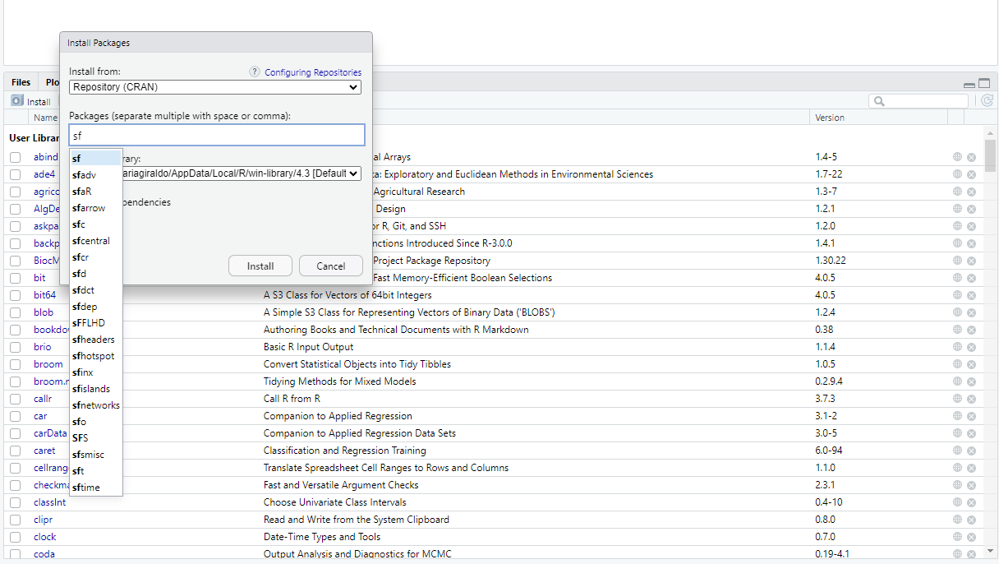
Los archivos que contienen datos espaciales se conocen comúnmente como shapefiles. En R, los shapefiles se suelen representar mediante vectores, que consisten en la descripción de la geometría o forma (shape) de los objetos.
Los datos espaciales son diversos en sus características y generalmente se dividen en tipos de vectores que en cada caso consisten en un conjunto de pares de coordenadas (x,y):
Puntos: Una sola ubicación descrita por un punto como la dirección de una casa geocodificada.
Líneas: Un segmento compuesto por una serie de puntos conectados entre sí que no forman un objeto cerrado.
Polígonos: Una superficie plana compuesta por una serie de líneas conectadas entre sí que forman un objeto cerrado.
Librerías
Antes de iniciar con los procesos de edición de datos, se recomienda cargar todas las librerías que se usarán. Para agilizar los procesos que se llevarán a cabo y asegurar que las funciones operen de manera correcta.
library(sf)Linking to GEOS 3.13.0, GDAL 3.10.1, PROJ 9.5.1; sf_use_s2() is TRUElibrary(raster)Loading required package: spCrear puntos espaciales
La función st_point() crea una geometría de un solo punto en las coordenadas de longitud y latitud especificadas.
# Crear un punto en las coordenadas (x, y)
coordenadas =c(3.501251,-76.355102)
punto= st_point(coordenadas)
plot(punto, axes = TRUE)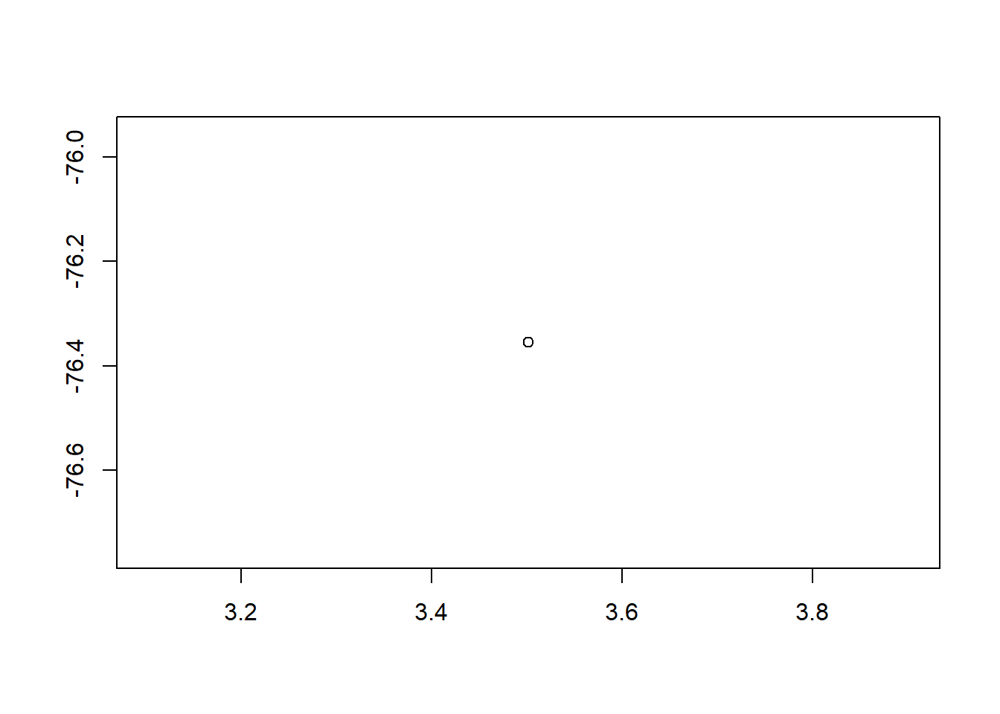
Con la función st_multipoint() se puede crear una colección de múltiples geometrías de puntos, donde cada fila de la matriz representa las coordenadas de un punto (longitud, latitud).
# Crea un vector con coordenadas en x
Xs = c(3.501251, 3.498767, 3.505466, 3.499799, 3.504230 )
# Crea un vector con coordenadas en y
Ys = c(-76.355102, -76.356593, -76.343899, -76.346217, -76.359751 )
# Pega Xs y Ys para crear una tabla de coordenadas
puntos = cbind(Xs,Ys)
# Crea el objeto Multipoint (MP) y visualiza
MP = st_multipoint(puntos)
plot(MP, axes = TRUE)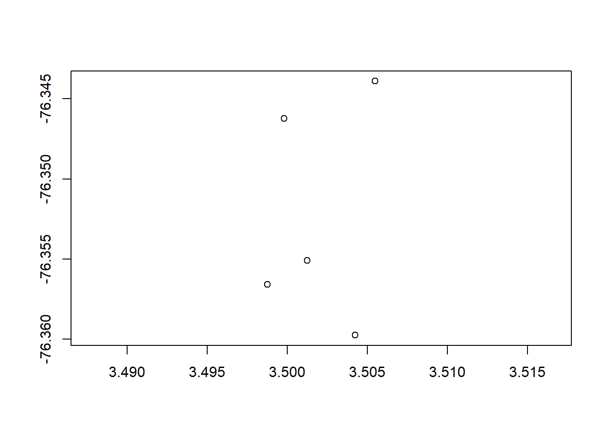
Crear un polígono
st_polygon() Esta función permite crear un elemento poligonal a partir de una lista de geometrías lineales que definen sus límites.
# Crea y cerrar las coordenadas en X
x = c(3.501251, 3.498767, 3.499799,3.504230,3.501251)
# Crea y cerrar las coordenadas en Y
y= c(-76.355102, -76.356593, -76.346217,-76.359751,-76.355102)
# Crear un dataset con las coordenadas
c = cbind(x,y)
print(c) x y
[1,] 3.501251 -76.35510
[2,] 3.498767 -76.35659
[3,] 3.499799 -76.34622
[4,] 3.504230 -76.35975
[5,] 3.501251 -76.35510class(c)[1] "matrix" "array" # IMPORTANTE: Se debe cerrar el polígono (último par de coord = primero)
# Crea el objeto Polygon. Un polygon es una forma simple cerrada
polygon <- st_polygon(list(c))
plot(polygon, axes= TRUE)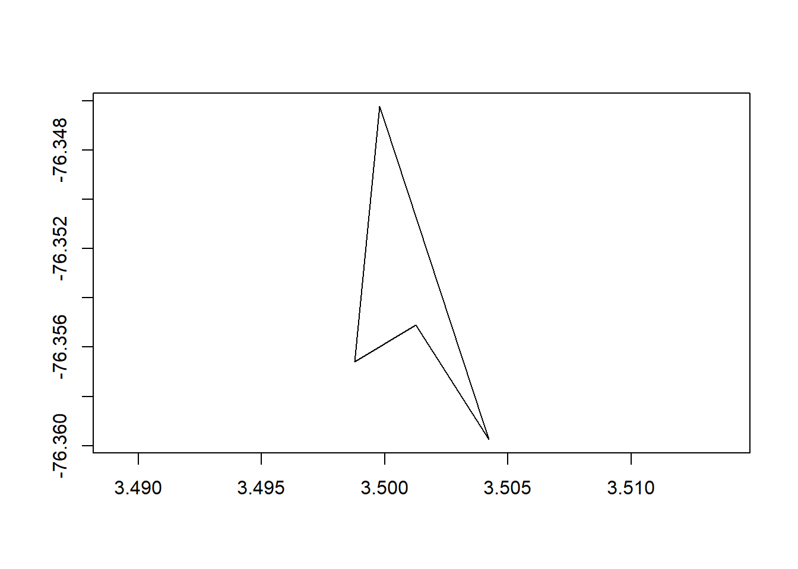
Asignar CRS
Para que estos datos sean geoespaciales es importante asignarles un sistema de coordenadas, mediante la función st_set_crs():
data = data.frame(Longitud= x, Latitud= y)
shapefile= st_as_sf(data, coords = c('Longitud','Latitud')) %>% st_set_crs(4326)
plot(shapefile, axes= TRUE)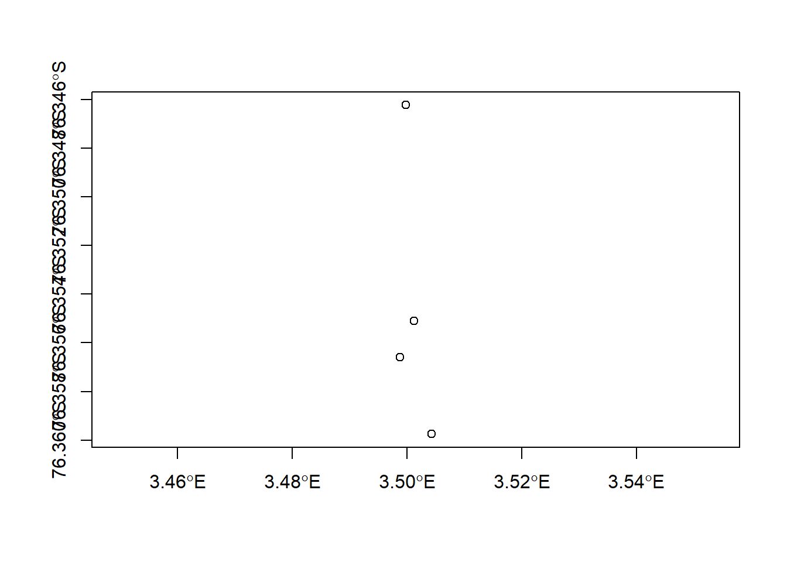
Importar los datos
El paquete shapefile puede manejar varios tipos de formato como shp, GeoJSON, GPKG, etc. Para importarlo se utiliza la función st_read con la ruta del archivo y el formato a cargar (.shp, .geojson, .gdb, .dbf, etc.)
Nota: Los datos utilizados en este estudio fueron obtenidos de la Base de Datos Armonizada de Suelos del Ecuador 2021 (Armas, D. I. et al, 2022) que contiene análisis de suelos realizados en Ecuador con información de datos del perfil del suelo y datos de horizontes.
datos= st_read("datos/cap07/horizontes.gpkg", quiet = TRUE)
vectorial= st_read("datos/cap07/Watersheds.gpkg", quiet = TRUE)
vectorialSimple feature collection with 3 features and 15 fields
Geometry type: POLYGON
Dimension: XY
Bounding box: xmin: 684213.9 ymin: 9774715 xmax: 728901.5 ymax: 9823789
Projected CRS: WGS 84 / UTM zone 17S
NIVEL_1 NOMBRE_1 NIVEL_2 NOMBRE_2 NIVEL_3 NOMBRE_3 NIVEL_4 NOMBRE_4 NIVEL_5
1 1 <NA> 14 <NA> 149 <NA> 1494 <NA> 14949
2 1 <NA> 14 <NA> 144 <NA> 1449 <NA> 14493
3 1 <NA> 14 <NA> 144 <NA> 1449 <NA> 14495
NOMBRE_5 AREA_KM2 TIPO AREA_KM2_A DIGITO_N5 NIVEL5_DIG
1 <NA> 491.29 Continental 490.88 9 9
2 <NA> 138.36 Continental 138.24 3 3
3 <NA> 67.49 Continental 67.43 5 5
geom
1 POLYGON ((718768 9803371, 7...
2 POLYGON ((714956.3 9819854,...
3 POLYGON ((721691.3 9821495,...Guardar los datos editados
Cuando se hayan realizado las modificaciones necesarias, se pueden guardar los datos con st_write() :
#ejemplo= st_write(datos, "ruta/para/guardar/archivo.shp")Transformación de datos
Los archivos vectoriales permiten la conversión de los tipos de datos o la creación de nuevas características derivadas de las existentes.
Para estas modificaciones es importante tener en cuenta que se pueden usar las siguientes funciones:
as.integer() para convertir a tipo entero.
as.character() para convertir a tipo caracter.
as.logical() para convertir a tipo lógico (booleano).
as.factor() para convertir a tipo factor, etc.
class(datos$ID_PER)[1] "numeric"dato_integer= as.character(datos$ID_PER)
class(dato_integer)[1] "character"Con la función type.convert() se pueden convertir los elementos de un vector a su tipo de datos más adecuado luego de ser transformado a un data frame. Esto es útil inicialmente como caracteres, pero necesitas convertirlos a otros tipos de datos como numéricos, factores, lógicos, etc.
convert= data.frame(lapply(datos, type.convert,as.is = TRUE))
class(convert$ID_PER)[1] "integer"Procesamiento de datos espaciales
En los últimos años, R ha mejorado considerablemente sus herramientas para manipular y analizar datos geográficos de manera que sean compatibles con la sintaxis y las funcionalidades de otros paquetes del programa.
Reproyectar datos
Cuando se van a utilizar los archivos, proyectar las capas vectoriales a un sistema de coordenadas de referencia (SRC) específico en R, permite homogenizar la información y minimizar los errores en el procesamiento. La librería sf es útil dentro de este procedimiento.
st_crs() recupera la proyección asociada con un objeto de datos espaciales, proporcionando información sobre las unidades y el dato utilizado para representar las coordenadas.
crs_vectorial=st_crs(datos)
crs_vectorialCoordinate Reference System:
User input: WGS 84 / UTM zone 17S
wkt:
PROJCRS["WGS 84 / UTM zone 17S",
BASEGEOGCRS["WGS 84",
ENSEMBLE["World Geodetic System 1984 ensemble",
MEMBER["World Geodetic System 1984 (Transit)"],
MEMBER["World Geodetic System 1984 (G730)"],
MEMBER["World Geodetic System 1984 (G873)"],
MEMBER["World Geodetic System 1984 (G1150)"],
MEMBER["World Geodetic System 1984 (G1674)"],
MEMBER["World Geodetic System 1984 (G1762)"],
MEMBER["World Geodetic System 1984 (G2139)"],
MEMBER["World Geodetic System 1984 (G2296)"],
ELLIPSOID["WGS 84",6378137,298.257223563,
LENGTHUNIT["metre",1]],
ENSEMBLEACCURACY[2.0]],
PRIMEM["Greenwich",0,
ANGLEUNIT["degree",0.0174532925199433]],
ID["EPSG",4326]],
CONVERSION["UTM zone 17S",
METHOD["Transverse Mercator",
ID["EPSG",9807]],
PARAMETER["Latitude of natural origin",0,
ANGLEUNIT["degree",0.0174532925199433],
ID["EPSG",8801]],
PARAMETER["Longitude of natural origin",-81,
ANGLEUNIT["degree",0.0174532925199433],
ID["EPSG",8802]],
PARAMETER["Scale factor at natural origin",0.9996,
SCALEUNIT["unity",1],
ID["EPSG",8805]],
PARAMETER["False easting",500000,
LENGTHUNIT["metre",1],
ID["EPSG",8806]],
PARAMETER["False northing",10000000,
LENGTHUNIT["metre",1],
ID["EPSG",8807]]],
CS[Cartesian,2],
AXIS["(E)",east,
ORDER[1],
LENGTHUNIT["metre",1]],
AXIS["(N)",north,
ORDER[2],
LENGTHUNIT["metre",1]],
USAGE[
SCOPE["Navigation and medium accuracy spatial referencing."],
AREA["Between 84°W and 78°W, southern hemisphere between 80°S and equator, onshore and offshore. Ecuador. Peru."],
BBOX[-80,-84,0,-78]],
ID["EPSG",32717]]Luego se le puede asignar nuevo sistema de coordenadas a los datos:
crs_vectorial=st_crs(vectorial)
crs_vectorialCoordinate Reference System:
User input: WGS 84 / UTM zone 17S
wkt:
PROJCRS["WGS 84 / UTM zone 17S",
BASEGEOGCRS["WGS 84",
ENSEMBLE["World Geodetic System 1984 ensemble",
MEMBER["World Geodetic System 1984 (Transit)"],
MEMBER["World Geodetic System 1984 (G730)"],
MEMBER["World Geodetic System 1984 (G873)"],
MEMBER["World Geodetic System 1984 (G1150)"],
MEMBER["World Geodetic System 1984 (G1674)"],
MEMBER["World Geodetic System 1984 (G1762)"],
MEMBER["World Geodetic System 1984 (G2139)"],
MEMBER["World Geodetic System 1984 (G2296)"],
ELLIPSOID["WGS 84",6378137,298.257223563,
LENGTHUNIT["metre",1]],
ENSEMBLEACCURACY[2.0]],
PRIMEM["Greenwich",0,
ANGLEUNIT["degree",0.0174532925199433]],
ID["EPSG",4326]],
CONVERSION["UTM zone 17S",
METHOD["Transverse Mercator",
ID["EPSG",9807]],
PARAMETER["Latitude of natural origin",0,
ANGLEUNIT["degree",0.0174532925199433],
ID["EPSG",8801]],
PARAMETER["Longitude of natural origin",-81,
ANGLEUNIT["degree",0.0174532925199433],
ID["EPSG",8802]],
PARAMETER["Scale factor at natural origin",0.9996,
SCALEUNIT["unity",1],
ID["EPSG",8805]],
PARAMETER["False easting",500000,
LENGTHUNIT["metre",1],
ID["EPSG",8806]],
PARAMETER["False northing",10000000,
LENGTHUNIT["metre",1],
ID["EPSG",8807]]],
CS[Cartesian,2],
AXIS["(E)",east,
ORDER[1],
LENGTHUNIT["metre",1]],
AXIS["(N)",north,
ORDER[2],
LENGTHUNIT["metre",1]],
USAGE[
SCOPE["Navigation and medium accuracy spatial referencing."],
AREA["Between 84°W and 78°W, southern hemisphere between 80°S and equator, onshore and offshore. Ecuador. Peru."],
BBOX[-80,-84,0,-78]],
ID["EPSG",32717]]st_transform() esta función también reproyecta datos espaciales de un CRS a otro, lo que permite el análisis de conjuntos de datos con diferentes sistemas de coordenadas.
crs_polygon=st_transform(vectorial, crs = st_crs(4326))
st_crs(crs_polygon)Coordinate Reference System:
User input: EPSG:4326
wkt:
GEOGCRS["WGS 84",
ENSEMBLE["World Geodetic System 1984 ensemble",
MEMBER["World Geodetic System 1984 (Transit)"],
MEMBER["World Geodetic System 1984 (G730)"],
MEMBER["World Geodetic System 1984 (G873)"],
MEMBER["World Geodetic System 1984 (G1150)"],
MEMBER["World Geodetic System 1984 (G1674)"],
MEMBER["World Geodetic System 1984 (G1762)"],
MEMBER["World Geodetic System 1984 (G2139)"],
MEMBER["World Geodetic System 1984 (G2296)"],
ELLIPSOID["WGS 84",6378137,298.257223563,
LENGTHUNIT["metre",1]],
ENSEMBLEACCURACY[2.0]],
PRIMEM["Greenwich",0,
ANGLEUNIT["degree",0.0174532925199433]],
CS[ellipsoidal,2],
AXIS["geodetic latitude (Lat)",north,
ORDER[1],
ANGLEUNIT["degree",0.0174532925199433]],
AXIS["geodetic longitude (Lon)",east,
ORDER[2],
ANGLEUNIT["degree",0.0174532925199433]],
USAGE[
SCOPE["Horizontal component of 3D system."],
AREA["World."],
BBOX[-90,-180,90,180]],
ID["EPSG",4326]]Geometría
Usando la función st_geometry() se puede ver la geometría incluida en el shapefile y seleccionarla.
st_geometry(vectorial)Geometry set for 3 features
Geometry type: POLYGON
Dimension: XY
Bounding box: xmin: 684213.9 ymin: 9774715 xmax: 728901.5 ymax: 9823789
Projected CRS: WGS 84 / UTM zone 17SPOLYGON ((718768 9803371, 718767.9 9803294, 718...POLYGON ((714956.3 9819854, 715011.8 9819765, 7...POLYGON ((721691.3 9821495, 721746.9 9821440, 7...Intersección y diferencia de geometrías
st_intersect() Calcula la intersección de dos geometrías, devolviendo el área o geometría compartida por ambas.
# Calcular la intersección entre los dos polígonos
interseccion = st_intersection(vectorial, datos)
# Visualizar los resultados
plot(st_geometry(vectorial), col = "gray")
plot(st_geometry(datos),add= TRUE, col = "red", pch= 20)
plot(st_geometry(interseccion), add= TRUE, col = "green", pch= 20) 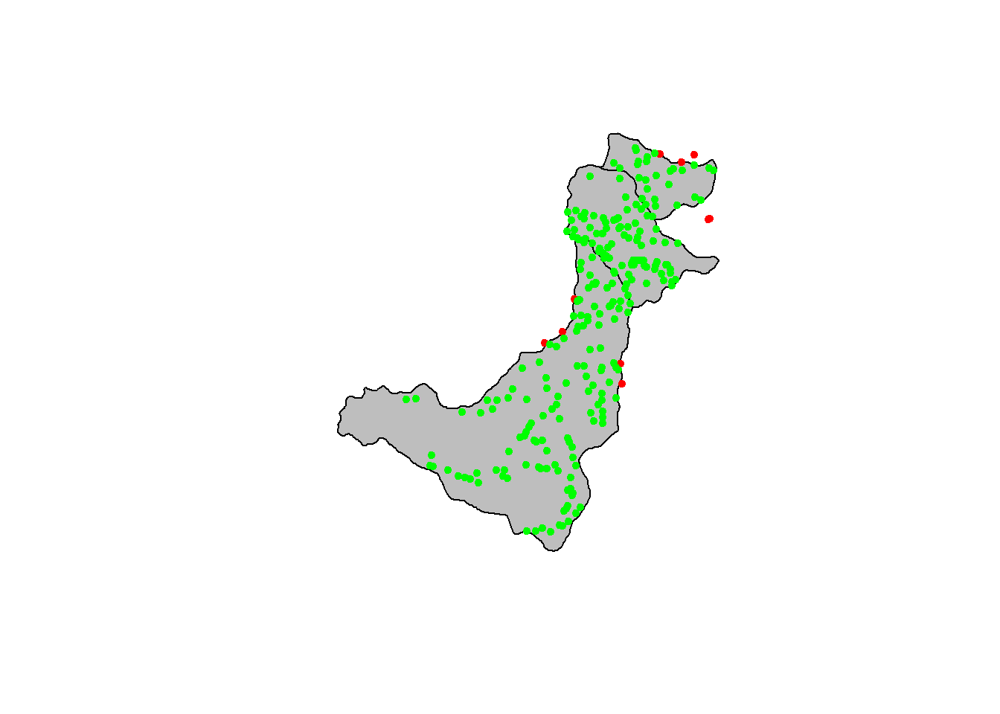
st_difference(geom1, geom2) Calcula la diferencia entre dos geometrías, lo que da como resultado la parte de una geometría que no está incluida en el otro polígono.
# Calcular la diferencia entre los polígonos
diferencia = st_difference(vectorial, datos)
# Visualizar los resultados
plot(st_geometry(diferencia), col = "red", main = "Diferencia entre polígonos")
plot(st_geometry(datos), add = TRUE, col = "blue")
plot(st_geometry(vectorial), add = TRUE, col = "green")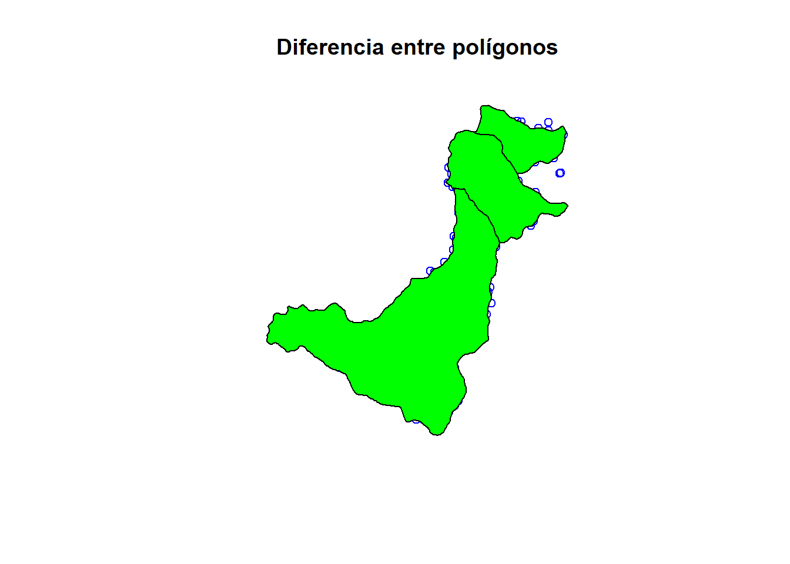
Unión de geometrías
La función st_union() combina dos geometrías en una sola geometría, creando potencialmente un multipolígono si se superponen significativamente. Los argumentos permiten controlar cómo manejar las superposiciones (por ejemplo, disolución, unión, intersección).
# Fusionar las geometrías
poligono_fusionado = st_union(vectorial)
# Visualizar los resultados
plot(poligono_fusionado, col = "lightblue", main = "Fusión de polígonos")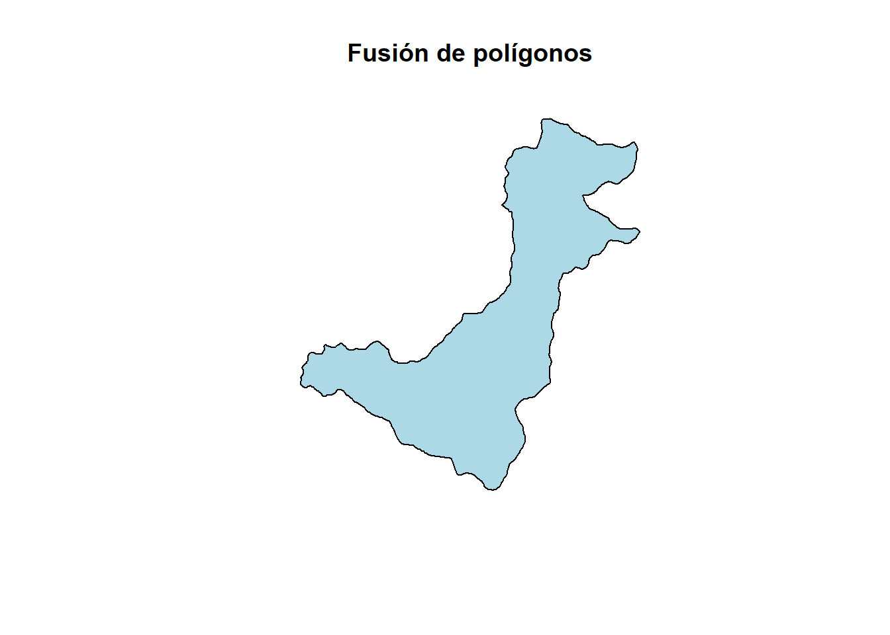
vectorial= poligono_fusionadost_centroid() determina el centro geométrico (centroide) de un punto, cadena de líneas o polígono.
# Calcular el centroide del polígono
centroide = st_centroid(vectorial)
# Visualizar los resultados
plot(st_geometry(vectorial), col = "lightblue", main = "Centroide del polígono")
plot(centroide, pch = 16, col = "red", add = TRUE)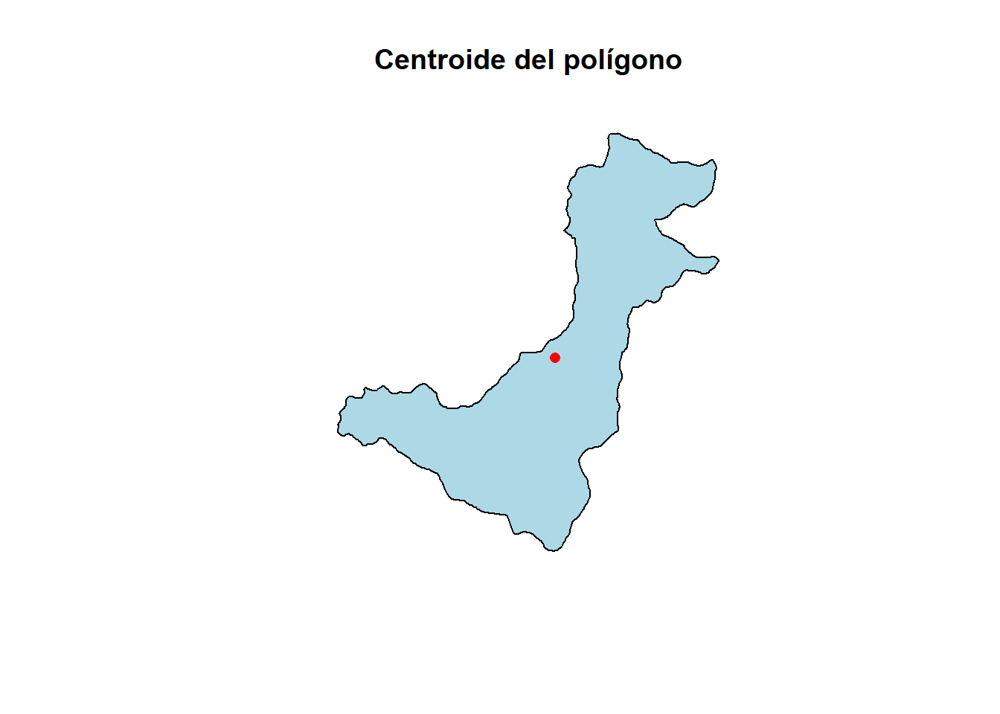
Buffer o zona de amortiguamiento
st_buffer() con esta función se crea una zona de amortiguamiento alrededor de una geometría, extendiendo sus límites una distancia especificada en las unidades CRS especificadas.
# Crear un buffer alrededor del punto
buffer = st_buffer(vectorial, dist = 1000)
vectorial = buffer
plot(vectorial)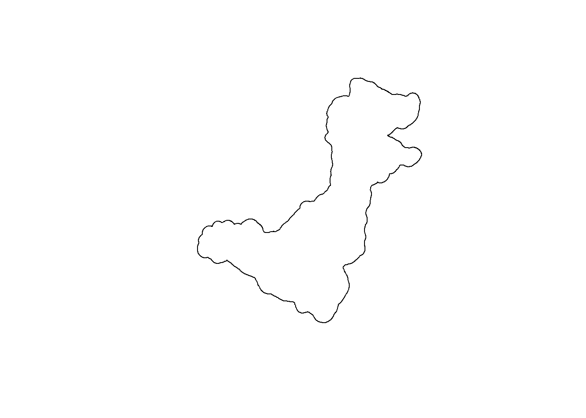
st_area() Calcula el área de una geometría de polígono, devolviendo el valor en las unidades del CRS.
# Calcular el área del polígono
area_poligono = st_area(vectorial)
area_ha= (area_poligono/10000)
# Mostrar el área del polígono
print(area_poligono)879333207 [m^2]print(paste(area_ha , "hectáreas"))[1] "87933.3206940523 hectáreas"La conversión de archivos entre formatos de vector y ráster es importante para el análisis espacial. Cada formato tiene sus propias características y ventajas, por lo que la elección del formato adecuado depende de la tarea que se vaya a realizar.
Vector a ráster
Luego de definir los valores de extensión y resolución del ráster de salida, la función rasterize() permite realizar el cambio del formato.
Vector a ráster
# Especifica la ruta al archivo Shapefile
datos_shape = as(st_read("datos/cap07/Watersheds.gpkg", quiet = TRUE), "Spatial")
# Crear un raster vacío
raster_resultante = raster()
# Definir la extensión del raster resultante basada en los límites del Shapefile
extent_raster = extent(datos_shape)
# Definir la resolución del raster resultante
resolucion = 30 # ajusta la resolución según sea necesario
# Establecer la extensión y la resolución del raster resultante
extent(raster_resultante) = extent_raster
res(raster_resultante) = resolucion
# Rasterizar el Shapefile
rasterizado = rasterize(datos_shape, raster_resultante)
plot(rasterizado)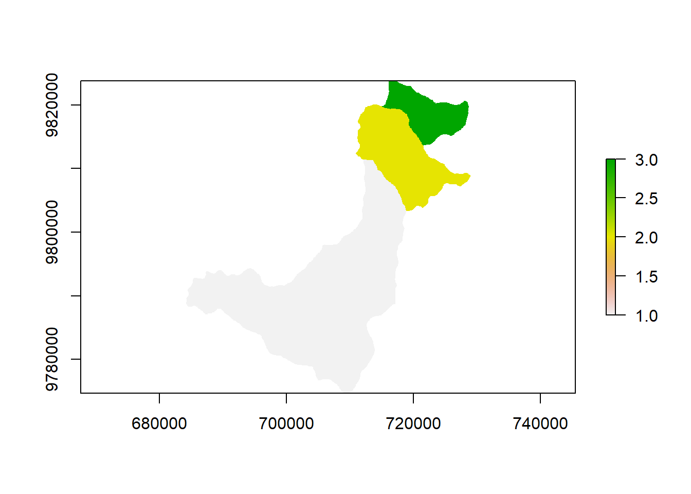